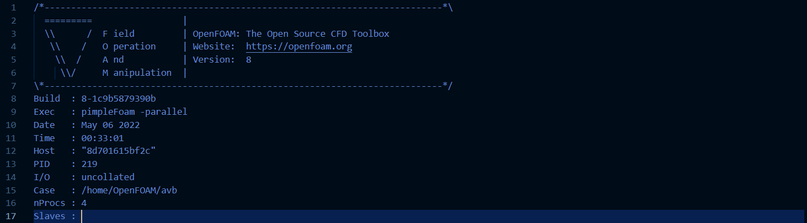
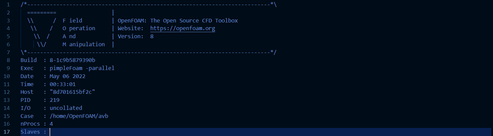

OpenFOAM is a open source program that serves to solve the analysis setting data created by XSim.
[Software download link]
ParaView: This is a open source program for visualization and interactive operation of 3D simulation.
[Dockerfile download link]
Dockerfile: This file can create a docker image OpenFOAM8 and JupyterLab.
[Commands to be entered]
1. Build a docker image
Please place each file as shown in this diagram, and then move to the directory(it is the directory at the very front of the diagram.) before running this command.
2. Run the docker image and create a docker container
*Caution1* The part in [ ] have to be changed according to your PC environment.
*Caution2* You have to set your absolute path which has unzipped your XSim project files to first [ ] area( = [Synchronize the files of the simulation generated in the Docker container you created (enter the absolute path of your HOSTPC)])
4. Start JupyterLab
5. Move your project folder`s directry
*Caution* The part in [ ] have to be changed according to your PC environment.
6. Change your project folder`s administrator privileges
7. Calculate your project with OpenFOAM8
8. Wait patiently!
When your PC finish calculating your project, please start ParaView and follow these steps.
1. Open your project folder as shown in the following image
2. Select "All Files(*)"
3. Select the "YourProjectName.OpenFOAM" file
4. Select the "OpenFOAMReader"
5. Click "Apply" button
6. Change "Opacity" value
＊＊How to make simulation results easier to read＊＊
These are some options to make your simulation results easier to see
[How to add slicer into your project]
1. Click slice button
2. Adjust a slice position
3. Click "Apply" button
finish!